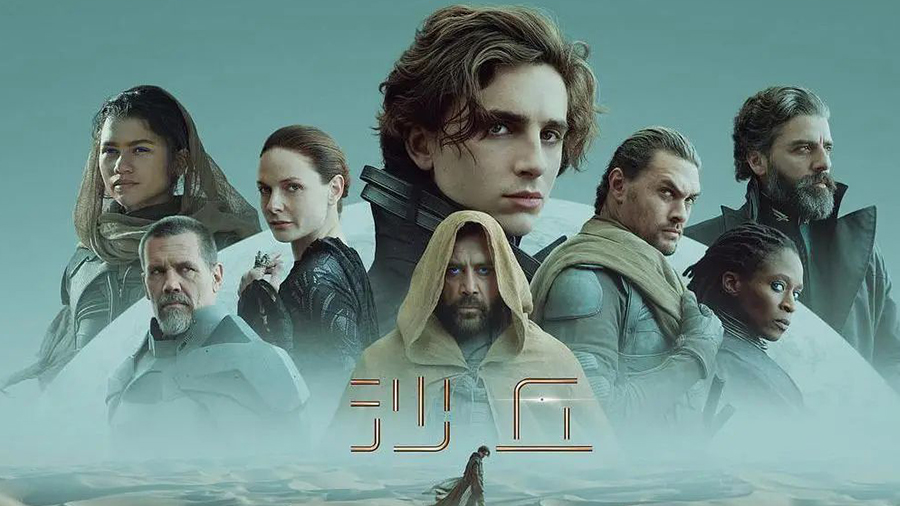

《沙丘》在1960年代刚写出来就受人喜爱，如今魅力不减。笔者认为，它讲的是8000年后的未来，但套路很古旧，底子是骑士小说。
《沙丘》的世界设定是复古的：家族世仇，皇帝与贵族尔虞我诈，宗教修会干涉一切，飞船奔向香料星球，巨头们争夺利润丰厚的香料生意，殖民者与原住民叛服无常，这一套欧美观众很熟悉，中国人不免有些隔膜。
古今中外，口味差不离，虽然随着骑士文化和精神衰亡，骑士小说销声匿迹，但普通人爱看的英雄故事还是那个套路。当代流行的科幻、奇幻、魔幻，很多就是骑士小说换了个马甲。《沙丘》是开先河之作。

你在《沙丘》电影里可以看到，虽然未来人造出了瞠目结舌的巨大飞船，巨大矿车，但打起架来，武士们仍然是械斗、肉搏、扔飞镖，人人穿着等同于铠甲的“能量罩”。他们的爱恨情仇胸襟抱负，更是复制了五百年前那一套。更妙的是，《沙丘》里大家都没有手机，多么健康的设定！
《沙丘》启发后来者的，一是引入“人类被AI坑惨了，从此限制科技”的设定，二是引入“真言师”“秘密修会”的各种法术。这两点都很不科学，却成功地把高在九天的科幻小说拉回了地面。作者也好写，读者也爱看，皆大欢喜。